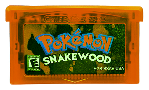
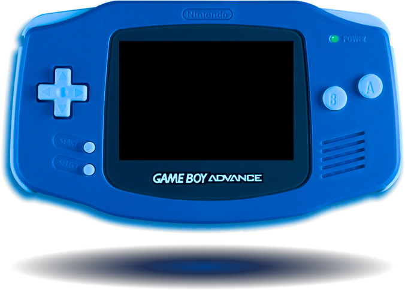

This archive is dedicated solely to the Fakemon phenomenon: the modified, unofficial, and original species introduced through community-made ROM hacks. The digital preservationist behind this project documents the distinct aesthetic, innovative designs, and unique sprite work of creatures that never saw an official release.
Last updated on October 15, 2025